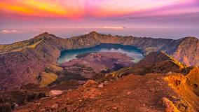
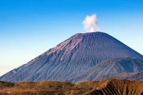
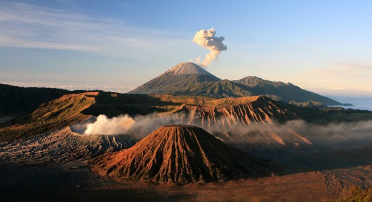
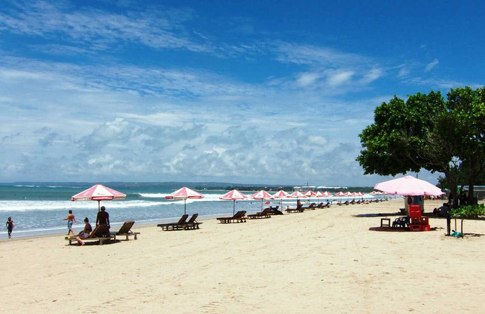
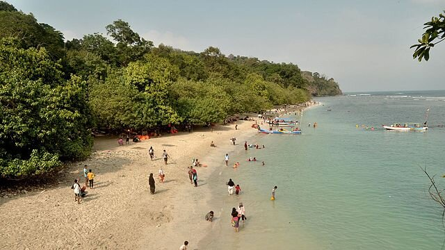
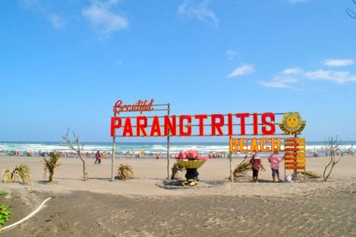

Jangan pikir 2 kali untuk merencanakan liburan. Just do it!.
| # | NamaGunung | Deskripsi | Gambar |
|---|---|---|---|
| 1 | GunungRinjani | Gunung Rinjani adalah gunung yang berlokasi di Pulau Lombok, Nusa Tenggara Barat. Gunung yang merupakan gunung berapi kedua tertinggi di Indonesia dengan ketinggian 3.726 mdpl serta terletak pada lintang 8º25' LS dan 116º28' BT ini merupakan gunung favorit bagi pendaki Indonesia karena keindahan pemandangannya. |  |
| 2 | GunungSemeru | Gunung Semeru atau Gunung Meru adalah sebuah gunung berapi kerucut di Jawa Timur, Indonesia. Gunung Semeru merupakan gunung tertinggi di Pulau Jawa, dengan puncaknya Mahameru, 3.676 meter dari permukaan laut. Gunung ini terbentuk akibat subduksi Lempeng Indo-Australia kebawah Lempeng Eurasia. |  |
| 3 | GunungBromo | Gunung Bromo atau dalam bahasa Tengger dieja "Brama", juga disebut Kaldera Tengger, adalah sebuah gunung berapi aktif di Jawa Timur, Indonesia. |  |
| # | NamaPantai | Deskripsi | Gambar |
|---|---|---|---|
| 1 | PantaiKuta | Pantai Kuta adalah sebuah tempat pariwisata yang terletak di Kuta, Badung|kecamatan Kuta sebelah selatan Kota Denpasar, Bali, Indonesia Daerah ini merupakan sebuah tujuan wisata turis mancanegara dan telah menjadi objek wisata andalan Pulau Bali sejak awal tahun 1970-an. |  |
| 2 | PantaiPangandaran | Pantai Pangandaran merupakan sebuah objek wisata andalan Kabupaten Pangandaran yang terletak di sebelah tenggara Jawa Barat, tepatnya di Desa Pangandaran dan Pananjung, sekitar 222 km dari selatan Bandung, Kecamatan Pangandaran, Kabupaten Pangandaran, Provinsi Jawa Barat. |  |
| 3 | PantaiParangtritis | Pantai Parangtritis adalah tempat wisata yang terletak di Desa Parangtritis, Kapanéwon Kretek, Kabupaten Bantul, Daerah Istimewa Yogyakarta. Jaraknya kurang lebih 27 km dari pusat Kota Yogyakarta. Pantai ini menjadi salah satu destinasi wisata terkenal di Yogyakarta dan telah menjadi ikon pariwisata di Yogyakarta. |  |